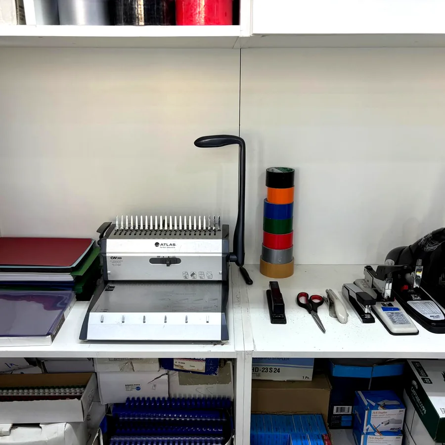

نوفر خدمة تجليد المذكرات والأبحاث والمشاريع للطلاب والأفراد والشركات، مع اختيار نوع التجليد والغلاف المناسب حسب عدد الصفحات وطبيعة الاستخدام.
أنواع التجليد المتوفرة
التجليد الحلزوني للمذكرات والملخصات
التجليد الحلزوني من أكثر الخيارات استخدامًا لدى الطلبة لأنه يسمح بفتح الصفحات بسهولة ويجعل المذكرة عملية أثناء المذاكرة. نختار مقاس الحلزون بحسب عدد الصفحات وسُمك الملف، ويمكن إضافة غلاف أمامي شفاف وخلفي كرتون أو بلاستيك لحماية الأوراق.
وهو مناسب للمذكرات، والملخصات، وأوراق العمل، وبنوك الأسئلة، ونماذج الامتحانات، والواجبات، والملفات التدريبية.
التجليد الحراري للأبحاث والمشاريع
التجليد الحراري يعطي الملف شكلًا رسميًا ومرتبًا، ولذلك يناسب الأبحاث والمشاريع الجامعية والتقارير والملفات التي ستُسلّم إلى جهة تعليمية أو إدارية. قبل التجليد نراجع ترتيب الصفحات والغلاف والفهرس وترقيم الصفحات عند طلب خدمة التنسيق.
التجليد العادي
يتوفر التجليد العادي للملفات البسيطة التي لا تحتاج حلزونًا أو تجليدًا حراريًا. نحدد الخيار الأنسب بعد معرفة عدد الصفحات وطريقة استخدام الملف.
خيارات الأغلفة
- غلاف أمامي شفاف لإظهار صفحة العنوان.
- خلفية كرتون لتقوية الملف.
- خلفية بلاستيك حسب الاستخدام.
- إمكانية طباعة غلاف ملون على ورق سميك.
- اختيار الغلاف بما يناسب المذكرة أو البحث أو المشروع.
ما الملفات التي نقوم بتجليدها؟
- المذكرات والملخصات الدراسية.
- أوراق العمل وبنوك الأسئلة.
- نماذج الاختبارات والسنوات السابقة.
- الأبحاث والواجبات.
- مشاريع التخرج والتقارير الجامعية.
- عروض PowerPoint المطبوعة.
- ملفات الشركات والعقود والتقارير.
- الملفات الشخصية والسير الذاتية عند الحاجة.
التجليد لطلاب المتوسط والثانوي
طلاب المتوسط والثانوي يحتاجون غالبًا إلى تجليد المذكرات والملخصات وأوراق المراجعة قبل الاختبارات. التجليد الحلزوني يساعد على ترتيب المواد وحمايتها، خصوصًا عند استخدام الملف يوميًا.
التجليد لطلاب الجامعة
نوفر تجليد الأبحاث والمشاريع والتقارير والعروض الجامعية، مع خدمات كتابة وتنسيق Word، وضبط الهوامش، وترقيم الصفحات، وإعداد الفهرس، وتحويل الملف إلى PDF قبل الطباعة.
التجليد لطلاب IG وAmerican Diploma
يمكن تجليد أوراق المراجعة والملفات التعليمية الكبيرة، وبنوك الأسئلة، والملخصات، مع اختيار الحلزون المناسب وعدد النسخ المطلوبة.
الطباعة والتجليد في مكان واحد
لا تحتاج إلى طباعة الملف في مكان وتجليده في مكان آخر. نوفر:
- طباعة المذكرات والملخصات.
- الطباعة بالألوان أو الأبيض والأسود.
- الطباعة وجهًا واحدًا أو وجهين.
- مقاسات A4 وA3.
- ورق عادي أو سميك.
- تنسيق الملفات ثم الطباعة والتجليد.
كيف تختار نوع التجليد المناسب؟
للاستخدام اليومي: التجليد الحلزوني غالبًا أكثر عملية.
للتسليم الرسمي: التجليد الحراري قد يكون أنسب للأبحاث والتقارير.
للملفات البسيطة: يمكن اختيار التجليد العادي بحسب عدد الصفحات.
يمكنك إرسال صورة أو ملف عبر واتساب، وسنساعدك في تحديد النوع المناسب دون الحاجة إلى شرح طويل.
كيف تطلب خدمة التجليد؟
- أرسل الملف عبر واتساب أو البريد الإلكتروني، أو أحضره على USB.
- حدد ما إذا كنت تحتاج طباعة قبل التجليد.
- اختر حلزونيًا أو حراريًا أو عاديًا.
- حدد نوع الغلاف الأمامي والخلفي.
- حدد عدد النسخ.
- اختر الاستلام من المحل أو التوصيل.
تجهيز الطلب قبل الوصول
يمكن إرسال الملف والتفاصيل قبل الحضور، ونقوم بالطباعة والتجليد والتجهيز بعد تأكيد الطلب. يساعد ذلك على تقليل وقت الانتظار، خصوصًا في بداية الدراسة وقبل الاختبارات.
خدمة التوصيل
تتوفر خدمة التوصيل لمعظم مناطق الكويت عن طريق شركة توصيل متعاقدة. يتم تحديد تفاصيل التوصيل بعد تجهيز الطلب والتأكد من عدد الملفات وحجمها.
لماذا تختار الخبرة الدولية للتجليد؟
- تجليد حلزوني وحراري وعادي.
- غلاف أمامي شفاف وخلفي كرتون أو بلاستيك.
- طباعة وتجليد في مكان واحد.
- خدمة مخصصة للطلاب والأفراد والشركات.
- استقبال الملفات عبر واتساب أو الإيميل أو USB.
- تنسيق Word وتحويل PDF عند الحاجة.
- تجهيز الطلب قبل الوصول.
- التوصيل لمعظم مناطق الكويت.
- موقعنا في حولي: شارع قتيبة، مجمع شيخة، دوار النجاة.
أرسل ملفك للطباعة والتجليد
أرسل الملف وحدد نوع التجليد وعدد النسخ والغلاف المطلوب، وسنراجع التفاصيل ونجهز الطلب قبل وصولك.
أسئلة شائعة عن التجليد
ما أنواع التجليد المتوفرة؟
نوفر التجليد الحلزوني والحراري والعادي حسب نوع الملف وحجمه.
هل يوجد غلاف أمامي شفاف؟
نعم، يتوفر غلاف أمامي شفاف مع خلفية كرتون أو بلاستيك.
هل التجليد مناسب للمذكرات الكبيرة؟
نعم، نختار مقاس الحلزون المناسب حسب عدد الصفحات وسُمك الملف.
ما الأفضل للمشاريع الجامعية؟
غالبًا يكون التجليد الحراري أو الحلزوني مناسبًا حسب تعليمات الجهة وحجم المشروع.
هل يمكن الطباعة والتجليد معًا؟
نعم، نوفر الطباعة بالألوان أو الأبيض والأسود ثم التجليد والتجهيز الكامل.
هل يمكن إرسال الملف عبر واتساب؟
نعم، أرسل الملف وحدد نوع التجليد وعدد النسخ.
هل يمكن الإرسال عبر البريد الإلكتروني؟
نعم، نستقبل الملفات عبر البريد الإلكتروني أيضًا.
هل يمكن إحضار الملف على USB؟
نعم، يمكن إحضار الملف على USB وطباعته وتجليده داخل المحل.
هل يمكن تجهيز الطلب قبل الوصول؟
نعم، نجهز الطباعة والتجليد مسبقًا بعد تأكيد التفاصيل.
هل يوجد توصيل؟
نعم، تتوفر خدمة التوصيل لمعظم مناطق الكويت.
هل يمكن تجليد الأبحاث والواجبات؟
نعم، نوفر تجليد الأبحاث والواجبات والمشاريع والتقارير.
هل يمكن طباعة غلاف ملون؟
نعم، يمكن طباعة غلاف ملون على ورق مناسب حسب طبيعة الملف.
هل يمكن تغيير الغلاف بعد التجليد؟
يعتمد ذلك على نوع التجليد؛ الحلزوني أسهل في الفك وإعادة التجهيز.